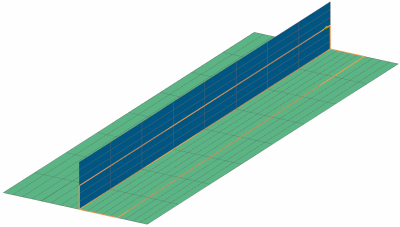

层片延伸
您可以将现有的层片，与其它皱褶数据一起，延伸到铺层中(不是原始铺层)。这让您可以模拟复杂的硬化操作(Curing operations)，以及预硬化复合部件的二次粘和过程，并从仿真中获取层间层片结果。
|
示例 |
在下面的 T-关节 模型中， Vertical 铺层中的层片被延伸到Horizontal 铺层中。 |
|
 |
 铺层
铺层
 Vertical
Vertical 层片 3
层片 3 层片 1
层片 1在仿真导航器中，延伸的全局层片在层片名称后面都有(延伸自[原始铺层名称])。